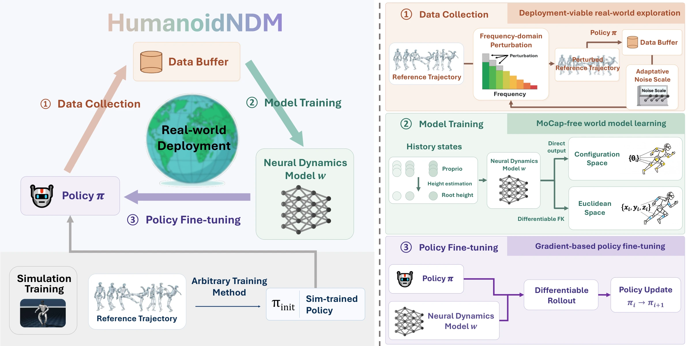
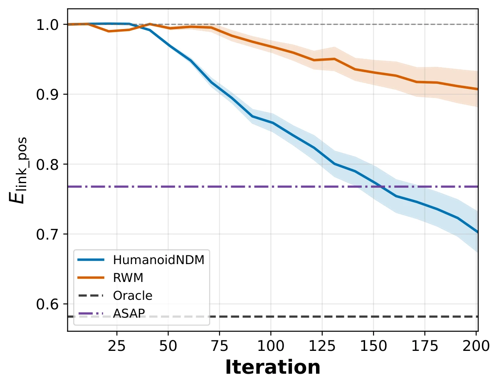
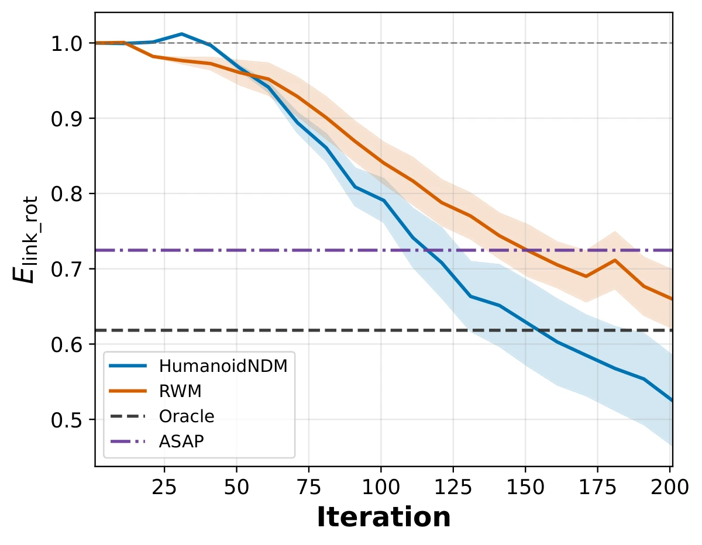

Explore smoothly with FENCE
Low-frequency perturbations modify reference motions while the policy maintains closed-loop control. Policy neighborhood coverage guides adaptive perturbation intensity.
Conference on Robot Learning 2026
The last mile of sim-to-real
Humanoid robots have recently achieved remarkable success in motion tracking. However, during real-world deployment, robots inevitably encounter dynamics gaps—arising from either extra physical disturbances or inaccurate simulation modeling—resulting in a significant training-deployment gap. Therefore, effectively leveraging real-world data to fine-tune policies represents the crucial “last mile” for robust deployment.
To bridge this gap, we propose HumanoidNDM, an online fine-tuning framework for humanoid motion tracking driven by a real-world-trained neural dynamics model. First, in the data collection stage, we introduce a low-frequency reference perturbation method with an adaptive intensity mechanism, balancing deployment feasibility and exploration efficiency. Second, for the model training stage, we train a robust history-based, proprioceptive neural dynamics model in Euclidean space by incorporating differentiable forward kinematics, eliminating the reliance on costly motion capture systems. Finally, in the policy fine-tuning stage, we directly fine-tune the policy via backpropagated model gradients, achieving high data efficiency.
Through physical validation on the Unitree G1 robot, we demonstrate that HumanoidNDM enables rapid real-world adaptation to various perturbations, representing the first online, MoCap-free fine-tuning framework for humanoid tracking policies.
Collect. Model. Adapt.
Start with a simulation-trained tracking policy. Collect real-world experience, learn the deployment dynamics, and improve the policy through differentiable rollouts.

Low-frequency perturbations modify reference motions while the policy maintains closed-loop control. Policy neighborhood coverage guides adaptive perturbation intensity.
A history-based neural dynamics model learns from onboard proprioception. Differentiable forward kinematics enables supervision in both configuration and Euclidean space.
Backpropagate tracking losses through multi-step model rollouts to fine-tune the policy directly, making effective use of limited real-world trajectories.
On the physical robot
Six tasks span dynamic whole-body motion and precise control. HumanoidNDM adapts to additional payloads and disturbances that are difficult to reproduce in simulation.
The task videos show the original behavior, the introduced disturbance, and online fine-tuning. FENCE exploration is shown at 100× speed. Evaluation runs occur every 10 episodes; milestone evaluations at episodes 0, 50, 100, 150, and 200 are shown at 1× speed, where applicable. Pen capping uses 50 trajectories; the other five primary tasks use 200. Use the player controls to enable audio or view full screen.
With 1.5 kg on each ankle, the robot initially cannot fully raise its leg. After 200 episodes, it achieves stable single-leg balance.
Air time0.00 → 1.90 s
A 1.5 kg load limits the left hand to chest height. After 200 episodes, the arm recovers its vertical reach.
Arm height0.98 → 1.40 m
A 0.75 kg load on the left hand causes misalignment. With just 50 episodes, the robot raises its hand and successfully caps the pen.
End-effector distance3.50 → 0.00 cm
Elastic bands restrict arm motion and cause staggering. After 200 episodes, the robot raises its right arm higher and regains stability.
Arm height1.06 → 1.35 m
Damaged arm motors produce noisy, inaccurate tracking. After 200 episodes, motion becomes smoother and motor noise decreases. Enable audio to hear the comparison.
Noise level73 → 55 dB
A 2 kg water bucket causes staggering and trajectory deviation. After 200 episodes, the robot walks straighter without staggering.
Deviation angle38° → 5°
Task-specific results above compare Direct Transfer with HumanoidNDM using the mean over three trials. Full mean ± standard deviation values are reported below and in the paper.
| Task | Metric | Direct Transfer | HumanoidNDM |
|---|---|---|---|
| Swallow balance | Air time (s) ↑ | 0.00 ± 0.00 | 1.90 ± 0.61 |
| Arm swing | Arm height (m) ↑ | 0.98 ± 0.00 | 1.40 ± 0.01 |
| Pen capping | EE distance (cm) ↓ | 3.50 ± 0.00 | 0.00 ± 0.00 |
| Lateral raise | Arm height (m) ↑ | 1.06 ± 0.07 | 1.35 ± 0.06 |
| Bowing | Noise level (dB) ↓ | 73 ± 8 | 55 ± 5 |
| Walking | Deviation angle (°) ↓ | 38 ± 17 | 5 ± 3 |
Additional demonstrations explore staged payload increases and multiple simultaneous disturbances.
Weights are added to both hands at episodes 0, 50, and 100. Evaluations at episodes 50, 100, and 200 show the arm-swing policy adapting to the increasing loads.
A 900 ml water bottle and elastic-band resistance disrupt arm motion and balance. After 200 episodes, the robot raises its arms and dances in place without staggering.
Deployment-viable exploration
Frequency-domain Exploration via Neighborhood Coverage Estimation perturbs reference motions at low frequencies, enabling data collection with less joint jitter and whole-body shaking.
Lower values indicate less jitter and shaking.
| Method | Joint ↓ | Roll-pitch ↓ |
|---|---|---|
| FENCE (ours) | 0.099 ± 0.018 | 0.126 ± 0.023 |
| Action Gaussian | 1.275 ± 0.313 | 1.678 ± 0.455 |
| Action OU | 0.707 ± 0.180 | 0.739 ± 0.210 |
| Obs. Gaussian | 1.151 ± 0.315 | 1.033 ± 0.218 |
| No noise | 0.076 ± 0.005 | 0.106 ± 0.008 |
FENCE approaches the stability of no-noise collection while providing active exploration.
Controlled evaluation in MuJoCo
Five motions and three disturbance types—inertial, contact, and actuation variations—yield 15 simulation settings. HumanoidNDM, ASAP, and RWM each use 200 deployment trajectories.
30% ↓link position error
47% ↓link rotation error


Scope. The paper studies adaptation to time-invariant disturbances. The staged-load video illustrates successive adaptation as loads are changed; arbitrary continuously time-varying dynamics remain outside the current method’s validated scope.
Reference this work
@inproceedings{chen2026humanoidndm,
title = {HumanoidNDM: Closing the Training-Deployment Gap of Motion
Tracking via Humanoid Neural Dynamics Model},
author = {Chen, Chao and Wang, Zhenrong and Wang, Jilong and
Feng, Yusen and Lyu, Jiangran and Yi, Li and Wang, He},
booktitle = {Conference on Robot Learning},
year = {2026},
url = {https://pku-epic.github.io/HumanoidNDM}
}